PHP
Googleアプリ
Wordpress
kintone
Excel
①入力用WEBフォーム
またはGoogleフォームから送信
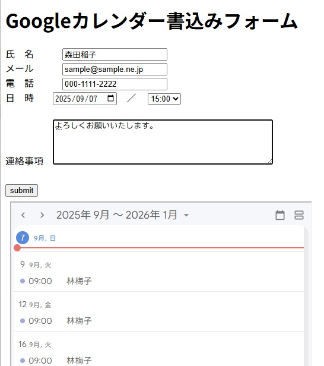
またはGoogleフォームから送信
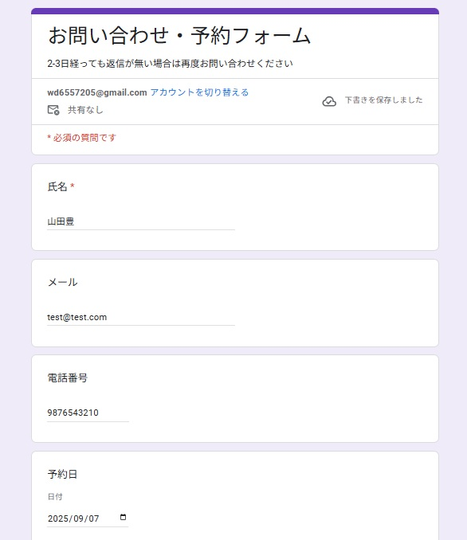
②スプレッドシートに書き込み
③Googleカレンダーに書き込み。
④LINEに通知。
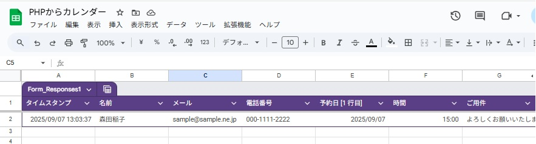
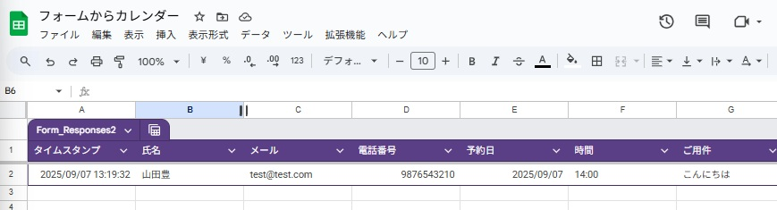
③Googleカレンダーに書き込み。
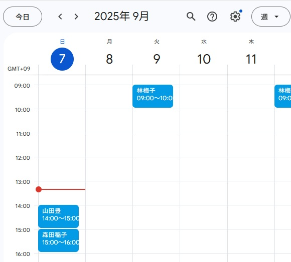
④LINEに通知。
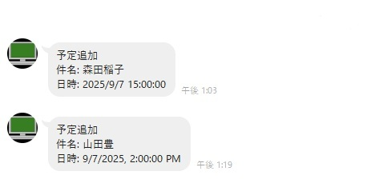
①welcartに追加したオリジナルの買い物カート
（スプレッドシート用とkintone用があります）
②送り先入力画面。ログイン情報はwelcartから
（スプレッドシート用とkintone用があります）
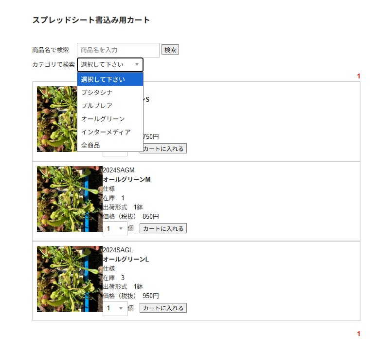
②送り先入力画面。ログイン情報はwelcartから
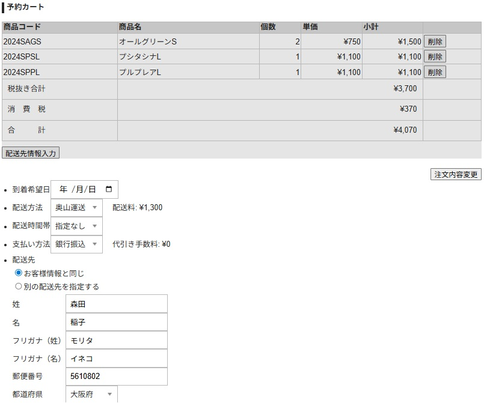
③送信後は通知メールが届きます
④スプレッドシートに書込む場合
kintoneに書込む場合
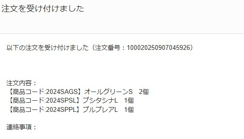
④スプレッドシートに書込む場合
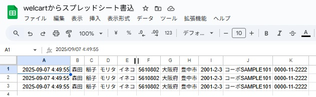
kintoneに書込む場合
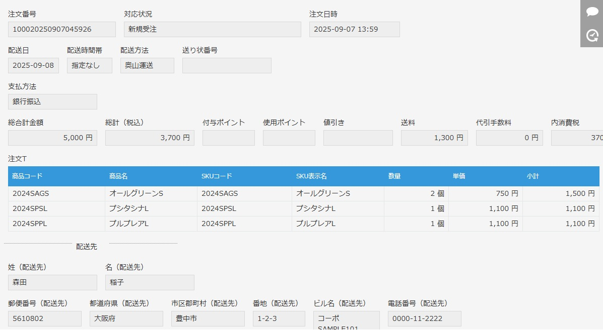
素のPHPの注文フォーム
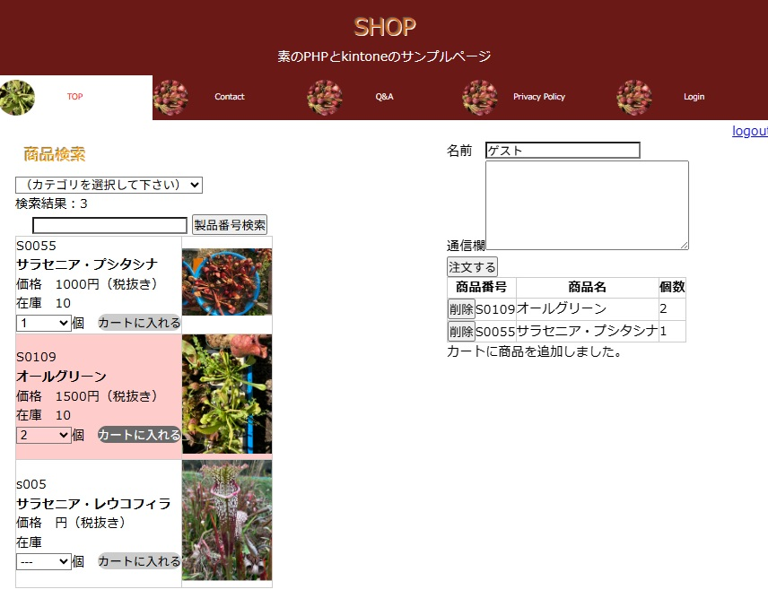
書き込んだデータ
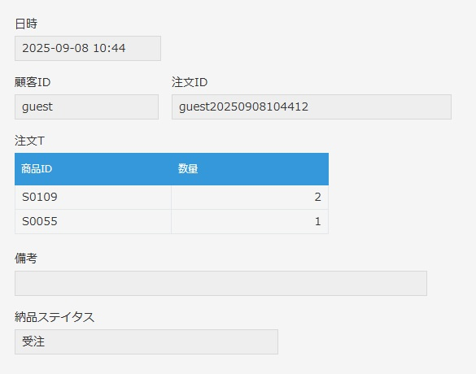
Excelで入力したらボタンを押して
データとグラフをWEBサーバへ送る
データとグラフをWEBサーバへ送る
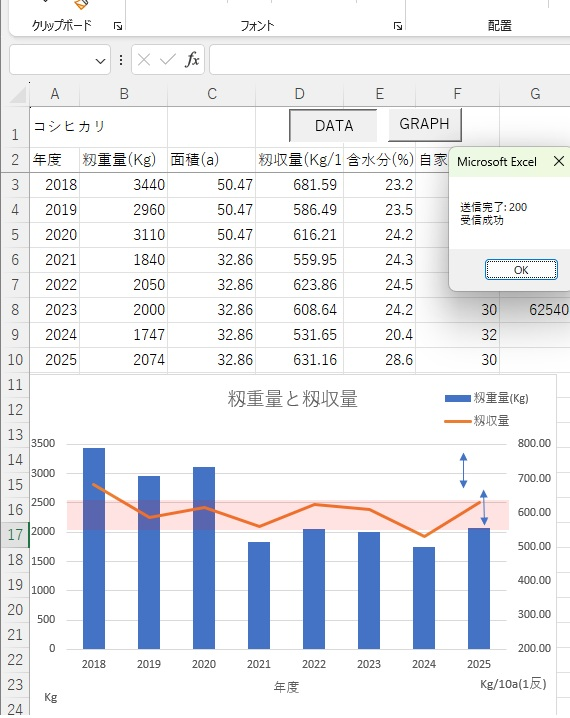
WEBページが更新される
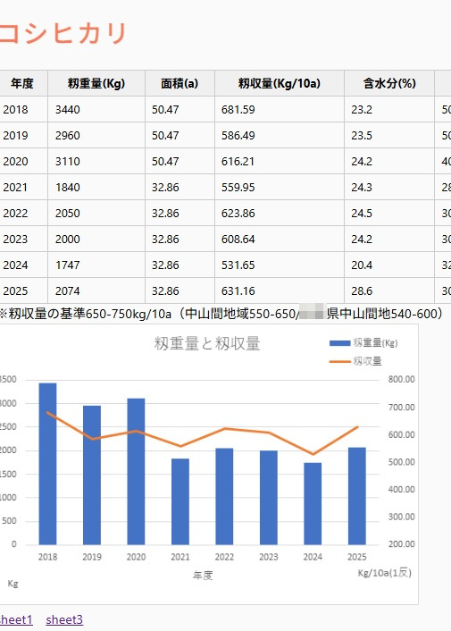
Excelマクロ
ExcelからWEBサーバーへデータ送信
翻訳（Hugging FaceのAI利用またはGoogle翻訳のAPI）
グラフ作成
ファイル名一括変更／一括削除／一覧作成
・・・その他、一年分の週報作成やシール印刷など
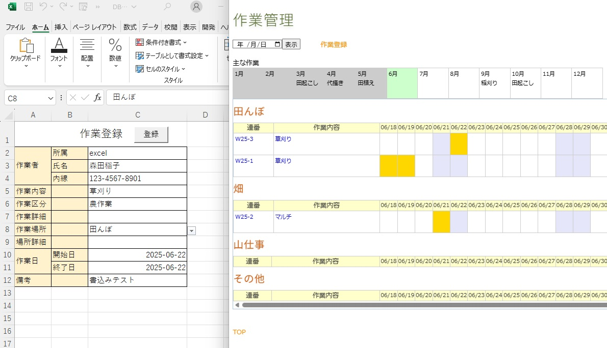
翻訳（Hugging FaceのAI利用またはGoogle翻訳のAPI）
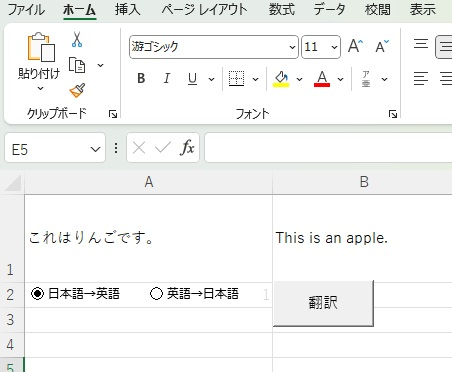
グラフ作成
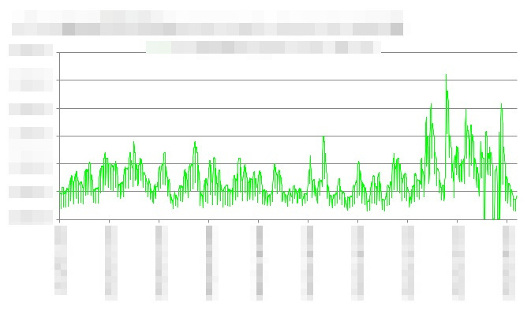
ファイル名一括変更／一括削除／一覧作成
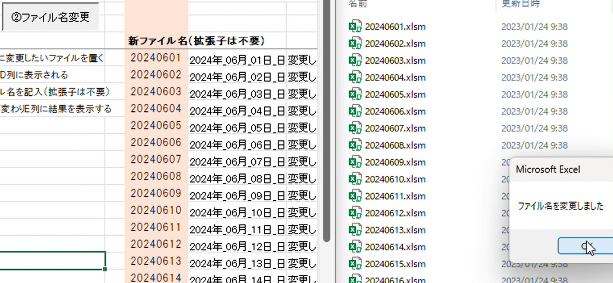
・・・その他、一年分の週報作成やシール印刷など
DIYなど
掲示板風LINE（家族用にDIY）
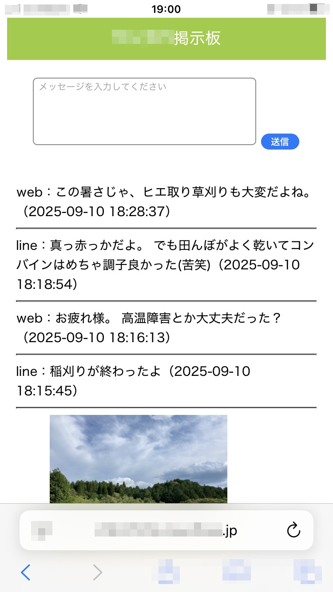
Laravelの勉強（TOPページ）
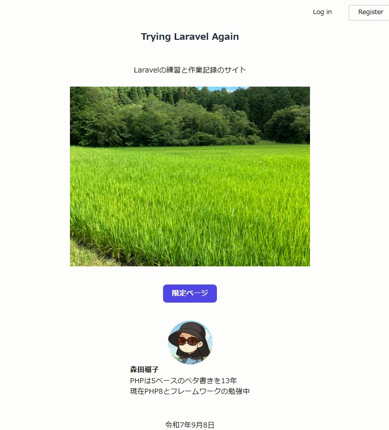
Laravelの勉強（限定ページ）
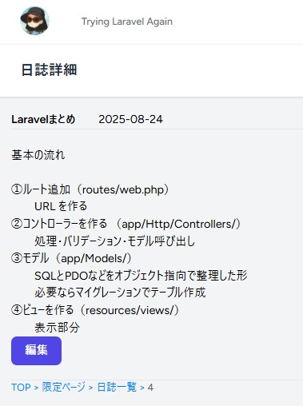
| 名 前 | 森田稲子 |
| 所 在 | 岐阜県 |
| ・オリジナルのWEB(PHP)システム作成 ・オリジナルのExcelマクロ作成 |
|
|
※PHPはフレームワークおよびWordPressは使用しておりません。 ※マクロはWindows11、Office2021で動作を確認しております。 | |
ご依頼やご相談に関しては、内容に応じて対応可能な範囲でお返事させていただきます。